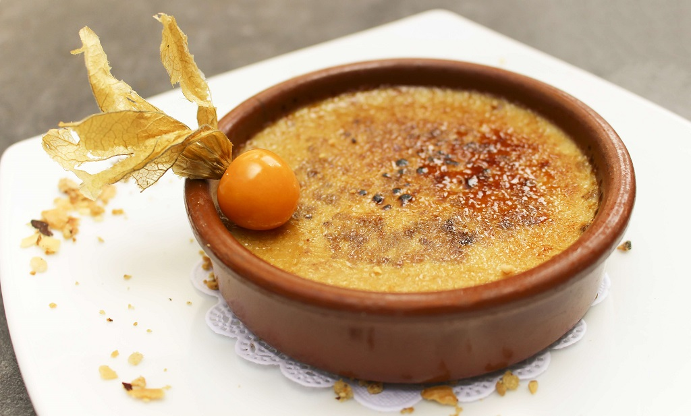
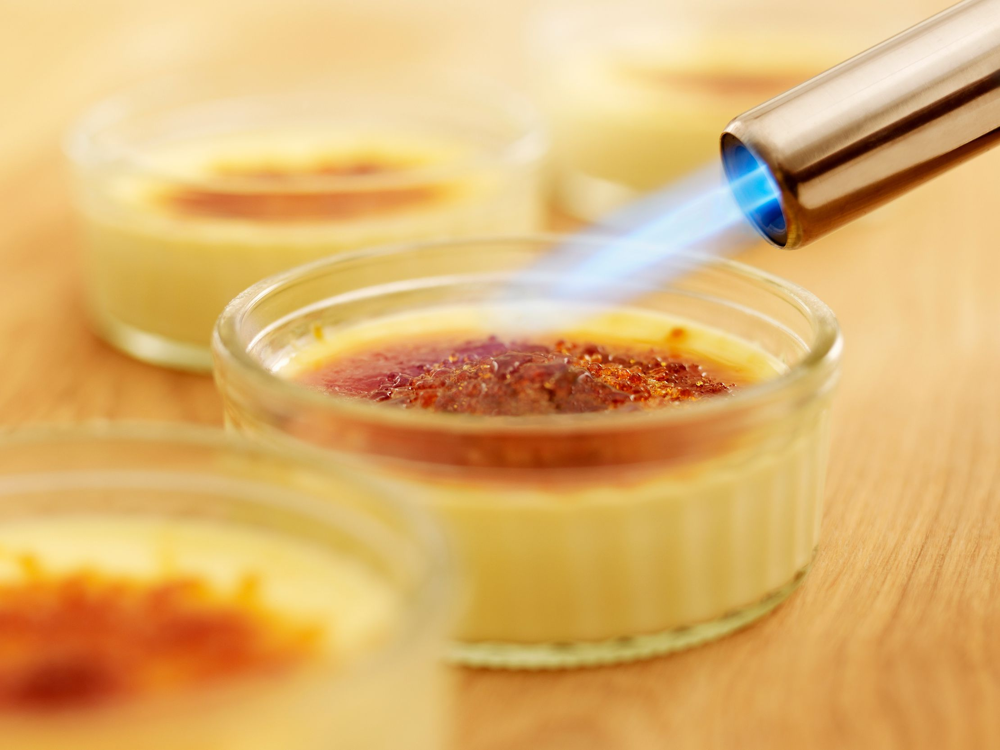

-

CREME BRULEE
I know you're hungry. Let's Start Cooking!
-

CREME BRULEE
I know you're hungry. Let's Start Cooking!
-

CREME BRULEE
I know you're hungry. Let's Start Cooking!
I know you're hungry. Let's Start Cooking!
I know you're hungry. Let's Start Cooking!
I know you're hungry. Let's Start Cooking!
Many beginner bakers are SHOCKED at how easy creme brûlée is! Only 6 ingredients required and if you follow my success tips, you’ll be gifted with the smoothest, creamiest dessert ever. Flecked with espresso and flavored with pure vanilla, this is my favorite crème brûlée recipe. The brilliantly creamy custard can only be reached by cracking through a crisp caramelized sugar ceiling. At its most basic, creme brulee is a creamy, pudding-like, baked custard with a brittle top of melted sugar that cracks when you gently tap it with a spoon. The custard is made with heavy cream, eggs, sugar, and vanilla.The textural difference between the two layers is unbelievable and separates this dessert from every other. Simply put, crème brûlée tastes like luxury. The GREAT news is that you don’t need to dine at a fancy restaurant for the best crème brûlée experience. Crème brûlée, also known as burned cream, burnt cream or Trinity cream, and similar to crema catalana, is a dessert consisting of a rich custard base topped with a layer of hardened caramelized sugar.
5 large egg yolks
3/4 cup (150g) granulated sugar, divided
3 cups (720ml) heavy cream or heavy whipping cream*
1/2 teaspoon espresso powder (optional but recommended)*
1/4 teaspoon salt
1 and 1/2 teaspoons pure vanilla extract*
Kitchen Torch
Step 1
Preheat oven to 325°F (163°C).
Step 2
Whisk the egg yolks and 1/2 cup (100g) of granulated sugar together. Set aside. (At this point or before you temper the egg yolks in the next step, bring a small kettle or pot of water to a boil. You’ll need hot water to pour into the baking sheet for the water bath.)
Step 3
Heat the heavy cream, espresso powder, and salt together in a medium saucepan over medium heat. As soon as it begins to simmer, remove from heat. Stir in the vanilla extract. Remove about 1/2 cup of warm heavy cream and, in a slow and steady stream, whisk into the egg yolks. Keep those egg yolks moving so they don’t scramble. In a slow and steady stream, pour and whisk the egg yolk mixture into the warm heavy cream.
Step 4
Place ramekins in a large baking pan. If you don’t have 1 pan large enough, bake them in a couple pans. Divide custard between each ramekin, filling to the top. Carefully fill the pan with about a 1/2 inch of the hot water. The baking pan will be hot so use an oven mitt to carefully transfer the pan to the oven.
Step 5
Bake until the edges are set and centers are a little jiggly. The time depends on the depth of your ramekins. My ramekins are 1-inch and the custard takes 35 minutes. Begin checking them at 30 minutes. For a more accurate sign, they’re done when an instant read thermometer registers 170°F (77°C).
Step 6
Remove pan from the oven and, using an oven mitt, remove the ramekins from the pan. Place on a wire rack to cool for at least 1 hour. Place in the refrigerator, loosely covered, and chill for at least 4 hours and up to 2 days before topping.
Step 7
Using the remaining granulated sugar, sprinkle a thin layer all over the surface of the chilled custards. Caramelize the sugar with a kitchen torch and serve immediately or store in the refrigerator for up to 1 hour before serving. (Caramelized topping is best enjoyed right away.)
1. Best ratio: Heavy cream and egg yolks are the key ingredients in crème brûlée. It took a little bit of testing to figure out the best ratio, but I loved 5 egg yolks with 3 cups of heavy cream the most. This produces a VERY creamy and lush crème brûlée. Save the leftover egg whites and add them to omelets and scrambled eggs the next few mornings.
2. Temper egg yolks: If you’ve never done it before, tempering egg yolks is nothing to fear– all you’re doing is slowly raising the temperature of the egg yolks so they don’t scramble. Whisk *some* of the warm heavy cream into the egg yolks + sugar, then whisk it all into the pot of warm heavy cream.
3. Shallow ramekins: Serve crème brûlée in individual ramekins. The small ramekins ensure the custard cooks evenly, though you could use a large wide ceramic dish instead.
4. Water bath: Place the ramekins in a large baking dish (I used a 9×13-inch baking pan), pour the custard in each, then fill the pan with hot water. The water bath creates a moist and humid environment for the crème brûlée, which is imperative for their texture. (Same story for lemon pudding cakes.) A regular hot oven typically produces rubber-y tasting crème brûlée with cracked surfaces.
5. Best bake time: You will likely over-bake the crème brûlée your first time. That’s what my friend told me before I began my crème brûlée adventures. They key, he said, is to look for a jiggly center. The edges will be set, the centers will jiggle like jello. (Anyone ever watch My Best Friend’s Wedding with Julia Roberts? Crème brûlée can never be jell-o. YOU could never be jell-o.) For a more accurate answer, use an instant read thermometer. They’re done when the thermometer registers 170°F (77°C).

{kind=link}
{kind=link}
{kind=link}
{kind=link}